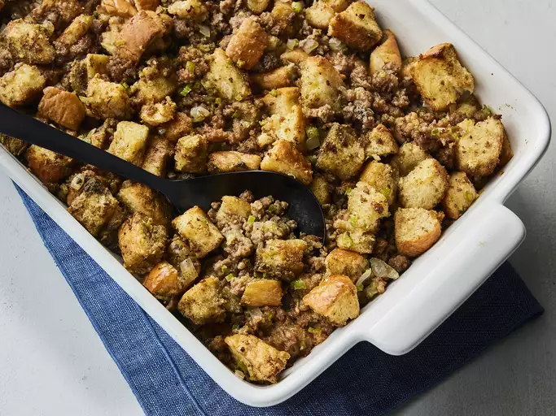

Sausage Stuffing

Description
This sausage meat stuffing has lots of flavors and is nice and moist. You can change the ingredients to your liking. I quadruple this recipe and cook the extra in my electric roaster; that's how much everyone loves it!
Ingredients
- 1 pound breakfast sausage
- ¾ cup melted butter, or as needed
- 1 ½ cups finely diced celery
- ¾ cup chopped onion
- 8 cups white bread cubes
- 3 teaspoons poultry seasoning
- ¼ teaspoon ground black pepper
Steps
- Gather all ingredients.
- Heat a large skillet over medium-high heat. Cook and stir sausage in the hot skillet until browned and crumbly, 5 to 7 minutes. Use a slotted spoon to transfer sausage to a large bowl.
- Pour sausage drippings into a measuring cup. Add enough melted butter to make 1 cup. Pour into the skillet over medium heat.
- Sauté celery and onions in butter mixture until onion is tender; do not brown.
- Stir in 1/3 of the bread cubes.
- Transfer mixture to the large bowl with sausage. Add remaining bread cubes, poultry seasoning, and pepper; mix well.
- Stuff bread and sausage mixture into the body and neck cavities of turkey; roast turkey as desired.